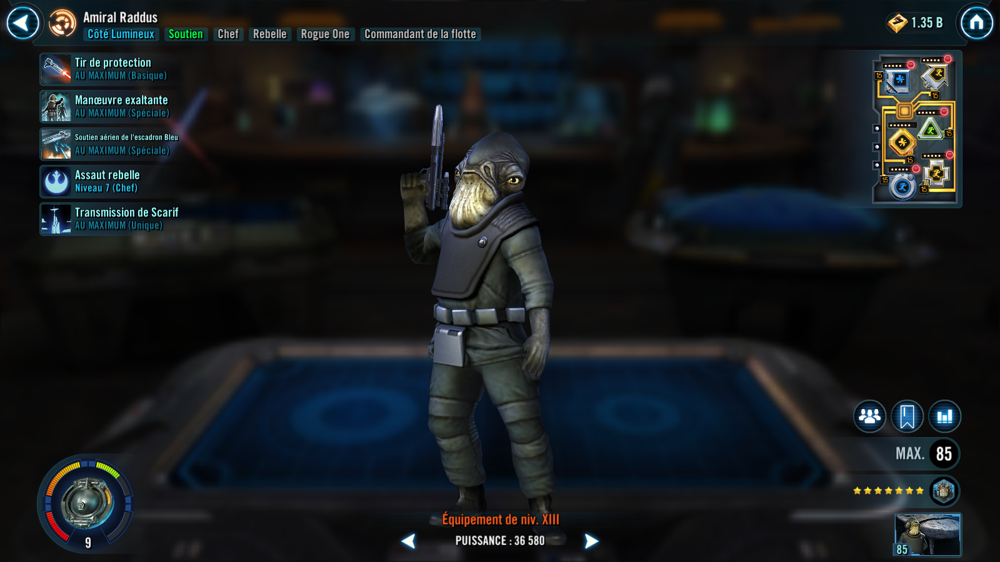

Admiral Raddus
A brilliant Rebel tactician who supports his allies by buying time for them to carry out their mission
A brilliant Rebel tactician who supports his allies by buying time for them to carry out their mission

Deal Special damage to target enemy and grant the weakest ally Protection Up (20%) for 2 turns.
All Rebel allies gain Protection Up (50%) for 2 turns and recover 35% Max Protection. All ally Tanks gain Taunt for 2 turns. All Rogue One allies gain Spark of Rebellion for 3 turns, which can't be copied and call all Rogue One allies to assist. If target enemy is Dark Side and debuffed, increase their cooldowns by 1 (excluding Galactic Legends).
If all allies are Rogue One, reduce the cooldown of Inspiring Maneuver by 2.
Spark of Rebellion: Gain 40% Offense and 30 Speed; when this character attacks, recover 20% Max Health and Protection; Empire enemies defeated by this character can't be revived; if Spark of Rebellion is dispelled, gain 40% Turn Meter, 5% Upload progress, and Protection Up (50%) for 2 turns.
Dispel all debuffs from all Light Side allies. Then, deal Special damage to all enemies. If Admiral Raddus is in the Leader slot and not the ally slot, gain 5% Upload progress and if this ability defeats an enemy, gain an additional 8% Upload progress.
For each Rogue One ally at the start of battle, Rogue One allies gain 10% Health, 12% Potency, 8 Speed, and 12% Tenacity. When an Empire enemy gains bonus Turn Meter, they are inflicted with Daze for 2 turns, which can't be resisted. If a Rogue One ally is critically hit by an enemy, that enemy gains Expose for 2 turns, which can't be resisted.
Omicron Boost : While in Grand Arenas: Rogue One allies gain 40% Max Protection. At the start of battle, all Rogue One allies gain Spark of Rebellion for 3 turns. When Spark of Rebellion is dispelled from an ally, they gain Critical Chance Up, Critical Damage Up, Defense Up, Health Up, Offense Up, Potency Up, and Protection Up (20%) for 2 turns.
Admiral Raddus gains 30% Defense and 40% Tenacity.
If any version of Jyn Erso is an ally, she gains Spark of Rebellion at the start of each encounter and when any version of Jyn Erso loses Spark of Rebellion, she regains Spark of Rebellion for 3 turns. While Admiral Raddus is alive, any version of Jyn Erso can't be defeated. If there are multiple ally versions of Jyn Erso, only Jyn Erso (Undercover) gains all of these benefits.
If Admiral Raddus is in the Leader slot and not the Ally slot, he gains the granted ability, Hope.
Admiral Raddus gains 1% Upload Progress for each detrimental effect resisted by a Rogue One ally. Whenever a Rogue One ally deals damage to an enemy with Expose, Admiral Raddus gains 1% Upload Progress for each stack of Expose on that enemy. Whenever a Rogue One ally uses a Special ability, Admiral Raddus gains 2% Upload Progress. Whenever any version of Jyn Erso uses a Basic or Special ability, Admiral Raddus gains 5% Upload Progress. If there are multiple ally versions of Jyn Erso, only Jyn Erso (Undercover) provides this benefit. At 100% Upload Progress, Admiral Raddus gains a bonus turn.
Hope: Limit one use per battle. Requires 100% Upload Progress to activate. Revive all allies, and all allies recover 100% Health and Protection. Then, deal True damage to all enemies and inflict Healing Immunity and Protection Disruption for 4 turns, which can't be dispelled, evaded, or resisted.

Limit one use per battle. Requires 100% Upload progress to activate. Revive all allies, and all allies recover 100% Health and Protection. Then, deal true damage to all enemies and inflict Protection Disruption and Healing Immunity for 4 turns, which can't be dispelled, evaded, or resisted.